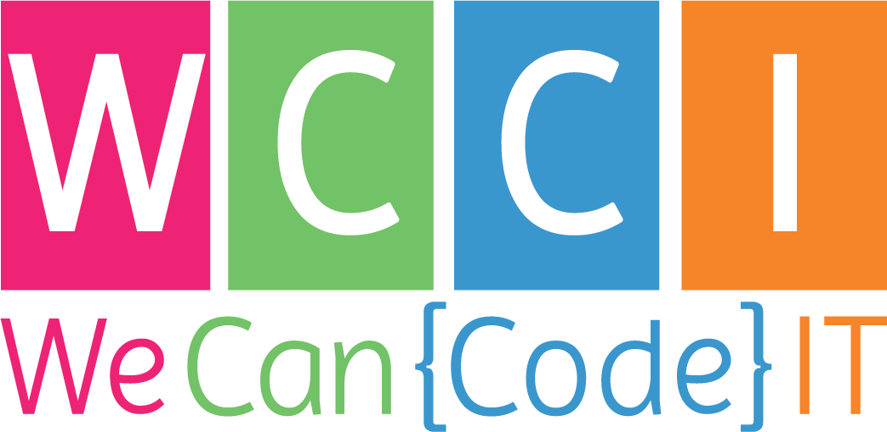
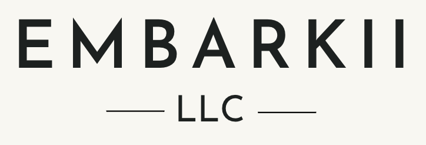

MAY 2020-AUG 2020

Jr. Full-Stack Developer
-
Involved in the activity of this boot camp, learning Agile
full-stack software development from expert instructors and
intensive hands-on projects that validated our capabilities
of providing real-time solutions to address business
problems
-
Designed, developed, and implemented highly scalable web
applications in a collaborative team-based and independent
settings
-
Created SQL databases from scratch, ensuring the data is
delivered faster and secure by using indexes, stored
procedures, and triggers
-
Implemented custom and friendly user interfaces using HTML5
and CSS3, leveraging the usage of JavaScript to implement
interactions and animations between different elements
-
Collaborated in a highly organized and Agile environment,
successfully using Git as a solution to efficiently manage
code development
OCT 2021 - APR 2022
Jr. Full-Stack Developer
-
Applied object-oriented programming fundamentals through
team-based projects that reflect real world business
problems
-
Leveraged native ES6 module bundling to build DRY, reusable
components
-
Designed and built single-page kennel management application
with React using Hooks
-
Designed applications through white boarding dependencies
and building ERD’s
-
Built and interacted with databases using SQL and ADO.NET
-
Developed a blog management platform in ASP.NET, MVC, and
Razor templates in Visual Studio 2022
-
Created RESTful Web API with C#/ .NET Core and connected it
to a React front-end
-
Built and maintained integration tests in .NET Core
MAY 2019 – MAR 2020
eCommerce Associate
-
Collaborated with a Web Developer in monitoring and
enhancing existing features and workflows, proposing
solutions that were successfully adopted and put into
practice on Wordpress, utilizing the WooCommerce plugin
-
Handled all customer service inquiries related to online
orders on platforms such as Podium, with tact and diplomacy,
providing solutions where needed
-
Managed the company’s website along with their Amazon and
eBay inventory, proposing enhancements that generated new
ideas for increasing the potential growth and revenue
-
Analyzed daily product metrics and costs, determining
product profitability rates in various marketplaces and
sales areas
-
Monitored, managed, and shipped the company’s website orders
daily, as well as providing sales support to the retail
store
JUL 2018 – MAY 2020

Amazon Seller
-
Built an innovative and friendly product listing, leveraging
the knowledge of UI techniques that offered an improved user
experience and engagement across multiple devices
-
Won 40+ 5-star Amazon customer reviews in the first 2 months
after launch, as well as receiving the “Amazon’s Choice
Badge” for multiple and high-volume searched keywords
-
Led negotiations related to prices, product details, and
shipping logistics with the product manufacturer, obtaining
a good deal that provided a great perspective for the near
future
-
Assessed market trends and gathered information with a
SaaS-based sales and market analytics tool called
JungleScout, to make sure the right decision is taken
anytime and the products will be sold
-
Addressed all customer inquiries related to online orders
through Amazon’s customer service management system, helping
them in choosing the best solution that fulfills their needs
JUL 2018 – APR 2019
Salesperson
-
Served as a hospitality ambassador by greeting and assisting
customers while providing high-level experiences daily
-
Completed customer transactions accurately, efficiently, and
promptly by scanning, itemizing, and totaling their
purchases
-
Prepared food and beverage items in a demanding and
fast-paced environment, addressing any request on time
-
Maintained customer communication to ensure accurate and
timely order processing, exceeding team goals and objectives
SEP 2017 – JUN 2018
Cardiac Monitor Technician
-
Monitored vital functions for all cardiac telemetry and
hard-wire monitored patients in a centralized location
-
Interpreted numerous types of dysrhythmias for 5-lead ECGs
using a specialized patient monitoring software system
called Epic
-
Informed nurses of any changes with patients' heart rates
and rhythm, as well as providing administrative support to
the hospital
-
Collaborated with multiple units, doctors, nurses, and
additional team members, successfully addressing any
situation with tact and diplomacy while ensuring the
hospital services were provided according to the patient’s
requirements